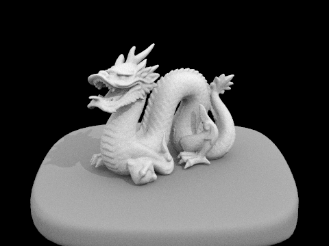
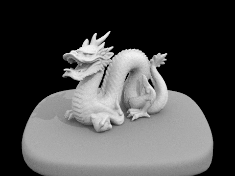

CS 184: Spring 2022
Sam Ellgass and Nima Rezaeian
In PathTracer, we implemented a ray tracing algorithm to render 3d images with physically-realistic lighting and shading for diffuse objects and meshes. We implemented both direct and indirect illumination, adaptive sampling, and ray-primitive intersection for triangles and spheres.
In part 1, we implemented generating rays, calculating and recording intersections with primitives. The ray generation function converts an origin point from camera (screen) space to world space, and then sets that ray's min and max intersection times to take into account near and far clipping planes. Then, the intersect functions of the primitives take in a ray, calculate the point of intersection, and if its within the allowable range for the ray, it populates an Intersection object for later use.
The triangle intersection algorithm we used was Muller Trombore, which uses an efficient version of the plane-test against the three sides of the triangle to yield barycentric coordinates and a time of intersection. Using those barycentric coordinates, we interpolate a surface normal and assess if the ray hit the object.
In part 2, we implemented a Bounding Volume Hierarchy. This structure is intended to minimize the work done to calculate intersection in a scene, and so as long as there were a given number of primitives, we recursively created more BVH nodes. We first generated a bounding box to encapsulate all of the primitives present, then used a heuristic to dispatch two child nodes of our root recursively to split the remaining primitives as evenly as possible.
We chose to use the heuristic of the absolute difference in number of primitives on either side of the average bounding box centroid for our elements. We calculated the most even split across all axes, and then split the primitives along that axis.
The rendering times using the BVH were astronomically faster. With a naive implementation, rendering the cow (cow.dae) above took around 35 seconds, which could be reduced to under 2 seconds with the BVH! When we tried to render CBlucy, which has over 100,000 primitives naively, it took more than twenty minutes, but with the BVH, it could be constructed in around 5 seconds.
Hemisphere Sampling: the first direct lighting function we implemented was sampling uniformly over a hemisphere around the point of interest. To do this, we used a monte carlo estimator to calculate an estimate of the amount of light reflecting from the point of interest. Using random rays, weighting by the PDF of our sampler, and including Lambert's cosine law, we were able to construct (relatively noisy) representations of our scenes.
Importance Sampling: the second direct lighting function we implemented was importance sampling. This method had the same goal, to estimate the reflected light off of the point of interest, but instead sampled in the direction of light sources. This method used each light in the scene to sample some number of rays from our point of interest to the area of the light, and corrected for this adaptive sampling technique by calculting the appropriate PDF of that sample. Then, if there was no intersection from the point before reaching the light source, that was included in our estimate.
First, we rendered the cornell box containing a bunny model. With hemisphere sampling (left), there is clear noise in the image, especially in the areas that the bunny mesh casts shadows on. However, importance sampling (right) remedies most of this noise, granting the walls correct coloring, and only resulting in noise around the bunny mesh's shadow.
The dragon mesh rendered with uniform hemisphere sampling resulted in a completely black image - because this image uses a point light source, hemisphere sampling makes it statistically impossible to intersect rays with the light source. However, with importance sampling, the image renders correctly with respect to the light source, and the output is very low noise.
 

Similarly, the cornell box with spheres renders with much more noise when using hemisphere sampling compared to importance sampling the light sources.
It can be seen that for any scene with complex geometry and a relatively limited number of lights, importance sampling is able to much more efficiently render the scene. When limiting the number of rays and samples, this becomes obvious, as the hemisphere-sampled images contain much more noise, and are less likely to be as accurate, as is evident with the comparisons above.
Next, we rendered the cornell box with spheres using different numbers of rays sampled per light source. For 1 ray per light source, the shaded parts of the image a very noisy (the shadows, wall below the light, and shading on the spheres). For 4 rays per light source, this noise is diminished, but still noticeable at the edges of the shadows and top of the spheres. For 16 rays per source, the image is almost free of noise, with some artifacts barely visible in the shadows. For 64 rays per light source, the shadow contour is almost photo-realistic, and the image has very low noise.
This task was the most difficult bug for us, with an issue in the bounding box's intersection method propogating through our illumination code to create entirely black scenes. Upon fixing this intersection algorithm to correctly account for partial intersection with a ray, the scenes rendered correctly.
For indirect lighting, we implemented a function to continually sample rays from our point of interest, always terminating with some probability. This allowed us to have occurrences of secondary or even further bounces before light reached a surface, up to a maximum number of bounces. For each bounce, we updated the overall illumination of the point of interest, and continued to generate rays previous to the point of interest.
Below are two renders with 1024 samples per pixel using both direct and indirect lighting.
Below, the cornell box and spheres are rendered with JUST direct (left) and indirect (right) illumination. As in part 3, the direct image has shadows only directly due to light cast by the light source above. For the indirect image, the light source isn't accounted for, and instead all visible lighting is due to further bounces, creating realistic color bleeding and shadows that objects cast on one another but are not due to occlusion.
As expected, direct illumination accounts for most of the shadows and occlusion in the scene, and global illumination brightens the image and includes details.
Below, the cornell box and bunny mesh are rendered with 0, 1, 2, 3, and 100 as the maximum ray depth for indirect illumination. Depth 0 is just direct illumination, so depth 1 is noticeably brighter and includes more detail especially on the ceiling and around the bunny model. Depth 2 is somewhat brighter, and depth 3 marginally brighter, while depth 100 appears quite similar to depth 3. Because we used a russian roulette termination probability of .35, the expected number of bounces per ray is 1/0.35 = 2.86, we should expect that most rays will only have depth 3, and any higher maximum depth is increasingly improbable.
Next, we rendered the keenan/banana.dae model using 1,2,4,8,16,64, and 1024 samples per pixel. As expected, with more samples, the image becomes less noisy, as the value of each pixel converges toward its true value. Thus, with 1024 samples, the image is almost entirely free of noise, and all shadows are almost perfectly smooth.
To implement adaptive sampling efficiently, we sampled batches of rays at a time, collecting information about the distribution of the samples received. Then, after every batch, we calculated the mean and standard deviation of our samples, and once they fell within a confidence interval that signified if our samples had converged, we returned the average ray to the buffer.
Below, we rendered the cornell box with spheres using 2048 samples (maximum) per pixel, and this generated a heat map of the pixels of the image, colored by how many samples were necessary for that pixel to converge. As can be seen by the images above, edges of shadows and objects at the edge of the light put out by the source take the longest to converge, whereas the most directly illuminated areas converge the fastest. Because of indirect illumination, some of the walls took longer to converge due to rays bouncing off of the primitives in the scene.


Additionally, the sampling rate heat maps for the cornell box with bunny mesh at 0, 1, 2, 3, and 100 maximum ray depth are shown below. These highlight that indirect illumination requires more samples for almost all pixels to fully converge, and especially impacts pixels that may receive rays that bounce off of the primitives in the scene.
Though it demanded a lot of patience in trying to understand debugging, PathTracer was a rewarding, elucidating project. From implementing mesh intersection naively to using a BVH to more efficiently sample intersections, this project taught the impetus behind intersection testing very naturally. Getting to output photorealistic images was also very rewarding, and I'm excited to continue to explore BSDFs, objects, and other camera parameters in 3-2.
Hosted at https://cal-cs184-student.github.io/sp22-project-webpages-nimarez/proj3-1/index